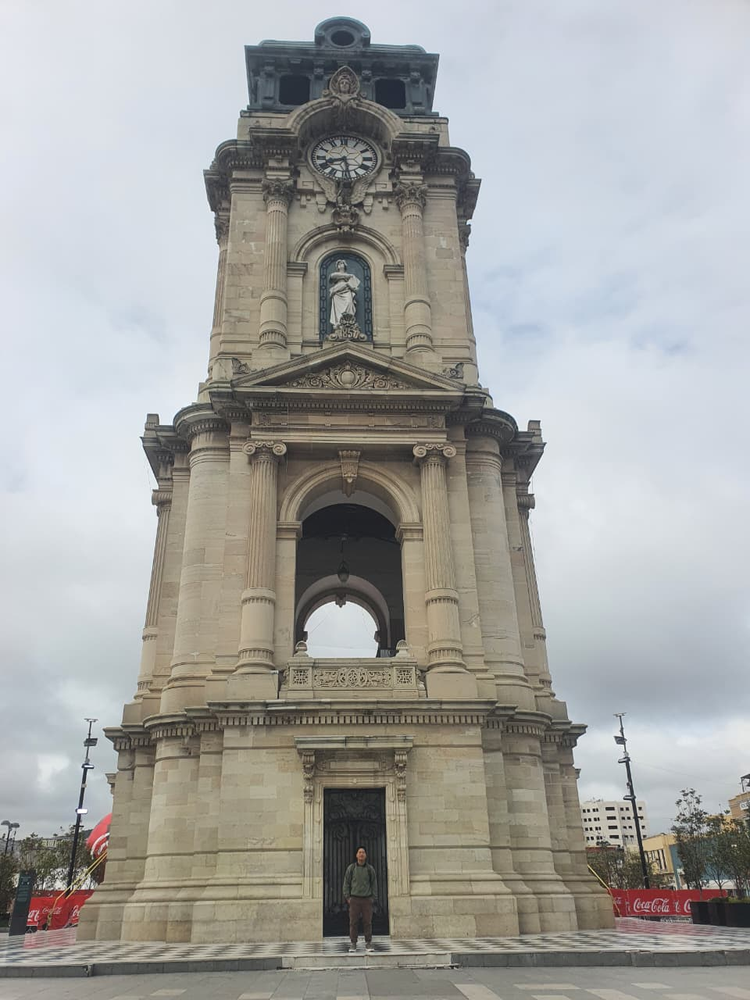

Aaron Pazaran| WDD 130

Hello! My name is Aarón Pazarán, and I am from Pachuca, Hidalgo, Mexico. I am passionate about programming and web development. I enjoy learning new technologies, building websites, and improving my coding skills. My goal is to grow as a developer, gain experience, and create useful digital solutions. I am excited to continue learning and developing my skills in the technology field.